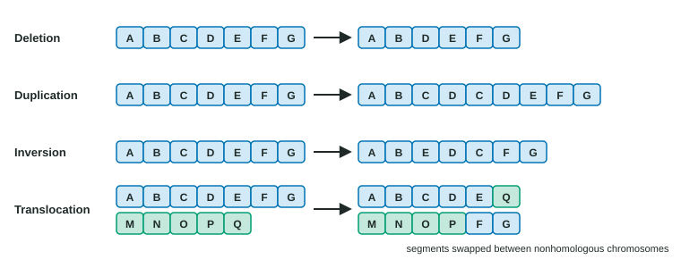

DNA is copied with astonishing accuracy, but not perfectly, and it can be damaged. A permanent change in the base sequence is a mutation. This page sorts mutations by what they do to a gene and its protein, explains where they come from, and shows how bacteria and viruses gain genetic variety in other ways too.
Point mutations: one base replaced

A point mutation changes a single base. The most common kind is a substitution: one base pair replaced by another. Its effect depends on the codon it lands in (Figure 1).
- Silent mutation: the new codon codes for the same amino acid (GAA → GAG, both glutamic acid). The protein is unchanged. Silent changes are common because codons for one amino acid often differ only in the third base.
- Missense mutation: the new codon codes for a different amino acid (GAA → GUA, glutamic acid → valine). The effect ranges from none to severe, depending on whether the new side chain disturbs the protein's shape or active site.
- Nonsense mutation: the new codon is a stop codon (UGG → UGA). The chain ends early, and the shortened protein usually does not work.
Insertions, deletions and frameshifts
An insertion adds bases and a deletion removes them. Because the ribosome reads in threes from the start codon, what matters is the number:
- A multiple of three adds or removes whole codons. The reading frame is kept: one amino acid is added or lost and the rest of the chain is normal. The most common cystic fibrosis allele is like this: three bases deleted, one amino acid (phenylalanine) missing from a 1,480-amino-acid channel protein, which then misfolds and is destroyed before it reaches the membrane.
- Any other number causes a frameshift mutation: every codon after the change is regrouped, the amino acids change, and a stop codon usually appears soon. A frameshift near the start of a gene almost always destroys the protein.
| Mutation | Change in DNA | Effect on the polypeptide | Usual severity |
|---|---|---|---|
| Silent | One base replaced | None | None |
| Missense | One base replaced | One amino acid changed | None to severe |
| Nonsense | One base replaced | Chain stops early | Usually severe |
| In-frame insertion or deletion | 3, 6, 9… bases added or lost | Amino acids added or lost; rest normal | Mild to severe |
| Frameshift | 1, 2, 4… bases added or lost | Every later amino acid changed; early stop likely | Usually severe |
Worked example: predicting the protein. Normal mRNA: AUG GCA UGG GAA CUA AAU GGC UAA. What does deleting the U at position 7 do?
Step 1. Write the new sequence: AUGGCA|GGGAACUAAAUGGC… Step 2. Regroup in threes from AUG: AUG GCA GGG AAC UAA. Step 3. Translate: Met-Ala-Gly-Asn, then stop. The normal chain was Met-Ala-Trp-Glu-Leu-Asn-Gly: after the deletion every codon differs, and the chain ends three codons early.
From one amino acid to a disease: sickle cell
In sickle cell disease, a missense mutation in the gene for the β chain of hemoglobin replaces glutamic acid, which is charged, with valine, which is nonpolar, at position 6. The valine sits on the outside of the protein. When oxygen is low, these hemoglobin molecules stick to each other into long fibers that bend red blood cells into stiff sickles. Sickled cells block small blood vessels and break down early, causing pain, organ damage and anemia. One base, one amino acid, a changed protein, a changed phenotype.
Where mutations come from
- Spontaneous errors. A few copying mistakes escape proofreading and mismatch repair (topic 6.2), and normal cell chemistry damages some bases. So mutations happen at a low rate in every population, even with no outside cause.
- Mutagens raise the rate. UV radiation joins neighboring T's in a strand; X-rays break DNA strands; some chemicals change bases so they pair wrongly. Some substances become mutagens only after enzymes in the liver change them. Mutagens that cause cancer are carcinogens, because cancer begins with mutations in genes that control the cell cycle (topic 4.6).
A mutation in a body cell affects that cell and its descendants only. A mutation in a cell that makes gametes can be passed to offspring.
Mutations are random
Mutations are not directed by what an organism needs or by its surroundings. A drug or a virus does not cause the particular mutations that would help a cell survive it. In 1943 Salvador Luria and Max Delbrück showed this with bacteria and a phage. If phage contact caused resistance, separate cultures would each have a similar, small number of resistant cells. Instead, most separate cultures had none or a few and some had very many: a mutation that happened early in a culture's growth had been copied into a large family of descendants before any phage was added. A mutation's timing and place in the genome are matters of chance; what happens to it afterward depends on the environment.
Harmful, neutral or helpful
Most mutations in a gene's coding sequence that change the protein are harmful or deleterious, because a working protein is more easily broken than improved. Many mutations are neutral: silent changes, or changes in DNA between genes. A few are beneficial. The same mutation can be all three, depending on the environment. Two copies of the sickle-cell allele cause disease; one copy protects against severe malaria, an advantage only where malaria is common; elsewhere one copy has little effect.
Mutations are the original source of the different versions of genes in a population. Meiosis and fertilization shuffle these versions into new combinations (topic 5.2), but only mutation creates new sequences.
Changes in chromosomes

Larger changes affect whole stretches of a chromosome. These chromosomal mutations often arise from breaks that are rejoined wrongly or from uneven crossing over (Figure 2):
- Deletion: a segment is lost, with all its genes.
- Duplication: a segment is repeated. Extra gene copies can later take on new jobs.
- Inversion: a segment is flipped end to end.
- Translocation: a segment moves to a nonhomologous chromosome. A translocation between chromosomes 9 and 22 joins two genes into one that drives a form of leukemia.
Errors in chromosome number also count. Nondisjunction (topic 5.2) adds or removes one chromosome, as in Down syndrome. Polyploidy means having more than two full sets, such as triploid (3n) or tetraploid (4n). It is rare in animals but common in plants: many crops, including wheat, strawberries and bananas, are polyploid. Triploid plants are nearly sterile, because three homologs cannot separate evenly in meiosis, which is how seedless watermelons and bananas are made.
How bacteria gain genes
Bacteria reproduce by dividing, which copies genes only from parent to offspring. But they can also take genes from other cells, even other species: horizontal gene transfer. It spreads useful genes, such as genes for surviving an antibiotic, quickly through bacterial communities.
| How DNA moves | Needs contact between cells? | Example | |
|---|---|---|---|
| Transformation | A cell takes up free DNA released by dead cells | No | Griffith's R cells taking up the capsule gene (topic 6.1) |
| Transduction | A phage packages some of its host's DNA by mistake and injects it into the next cell it infects | No (the phage carries it) | Genes for making amino acids moved between Salmonella strains by a phage (how transduction was found, 1952) |
| Conjugation | One cell passes DNA, often a plasmid, to another through a bridge formed by a pilus | Yes | Plasmids carrying genes for breaking down several drugs |
Transposons (transposable elements) are DNA segments that can move, or copy themselves, to new places in a genome, in bacteria and eukaryotes alike. Landing inside a gene usually disrupts it; landing nearby can change its regulation. Transposons and their remains make up nearly half of the human genome.
Variation in viruses
Viruses change quickly. RNA viruses copy their genomes with enzymes that have no proofreading, so their mutation rates are very high, and huge numbers of particles are made in each infection. Influenza adds a second trick, reassortment: its genome is eight separate RNA segments, and when two kinds of influenza infect the same cell, new particles can package a mix of segments from both. Viruses that swap genes this way, or recombine parts of their genomes, can carry surface proteins that people's immune systems have never met, which is how new flu pandemics have begun.
Common mistakes
- "Mutations are always harmful." Many are neutral and a few are helpful; the environment decides.
- "An insertion of three bases is a frameshift." Multiples of three keep the reading frame.
- "Cells mutate to adapt." Mutations are random; the environment determines which ones persist.
- "A silent mutation changes the protein a little." It changes nothing in the amino acid sequence.